Wake the island.
Welcome to our island. This is Bioma: a home for curious creatures, shifting tides and winds that answer your touch. Press PLAY/STOP and listen as the inhabitants wake up.
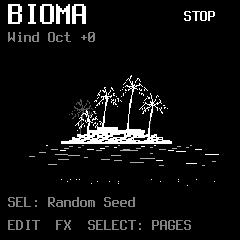
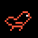
1BirdsThe level of calls, chirps and whistles.
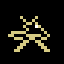
2InsectsThe level of buzzing and tiny rhythmic voices.
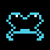
3WaterThe level of watery creatures, bubbles and low calls.
- 4Density
How busy the inhabitants become. This is the same global Density you will find in GLO.
These are synthesized voices, not a recording of a forest. You are shaping a small world as it happens.
Find your way around the display.
The title on the left tells you where you are: the machine on Home, or the page you are visiting. PLAY or STOP appears at the top right, so you can always see whether the island’s inhabitants are awake. The line below, Wind Oct +0, shows the keyboard octave; OCT− and OCT+ move Wind’s playing range.
The hints along the bottom tell you what is available on this page. They change as you travel. On Home, EDIT opens the inhabitants, FX opens the effects, and SELECT takes you through pages.
A short press brings you back to this island view. Hold HOME to open the menu, choose a machine or visit Settings.
Press SEL on Home to choose a new Seed: a different starting point for the island’s generative choices. Your levels stay where you left them. For now, just listen to the change; we will visit the Seed control later, in GLO.
Meet our Inhabitants
Our first inhabitants call from the trees. A dry, low chirp may open into repeated calls or a quick, canary-like phrase. Their voices are made with FM synthesis.
Cycle is active in Tame. It follows the global clock.
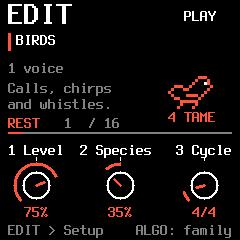
- 1Level
Bring Birds closer in the mix, or let them settle behind the other inhabitants.
- 2Species
Explore the voice’s register and character. Turn left for lower calls, right for higher ones. The centre-marked dial makes this direction visible.
- 3Cycle
Choose the cycle Birds will follow in Tame mode. In Wild, their timing is free.
- 4Wild / Tame
Wild lets them wander in time. Tame gives their appearances a musical grid, following the global clock.
Species and phrasing are different dimensions. Moving into a higher register does not simply select a different fixed recording. The small speech bubble follows the creature’s activity. In Tame, the Cycle sets a grid of opportunities, not a guaranteed recording that repeats identically. Density and Activity still decide how much the inhabitant speaks. For example, a 4/4 cycle spans four quarter-note beats; 3/4 spans three.
Let each inhabitant breathe.
Press EDIT again while editing a family. Its Setup page opens: a quieter way to decide how active that inhabitant should be, and how much of its sound reaches the effects.
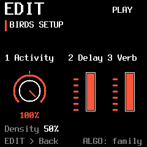
- 1Activity
Set this family’s activity. Turn it down to make the inhabitant calmer without changing its sound level.
- 2Delay
Send this family to the shared Delay.
- 3Verb
Send this family to the shared Reverb / ICE.
Press EDIT again to return. Each family keeps its own Activity and sends. FX sends feed shared effects; they do not create a separate effect engine for every inhabitant.
The tide around us.
Press LFO to visit Ocean Tide. Here the island meets a continuous wash of sea, gently rising and falling. This is an amplitude tide: its LFO moves the level.
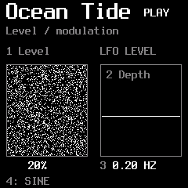
- 1Level
Set the underlying level of the ocean.
- 2Depth
Set how deeply the tide swells. At zero, this modulation is inactive.
- 3Speed
Choose how quickly the tide moves.
- 4Shape
Change the shape of its rise and fall.
Ocean Tide follows the late Filter → Reverb / ICE → Tape path. It does not enter Glitch, Damage or Delay. There is no separate SEL send page.
The climate of the whole island.
GLO gathers the settings that shape the larger scene. Density is shared with Home; the other controls change the variety, starting choices and pace of your world.
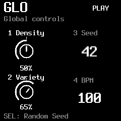
- 1Density
The global activity of Birds, Insects and Water. Use family Activity in Setup when one inhabitant needs more or less space.
- 2Variety
How much variation the generative voices introduce into their events.
- 3Seed
Choose the starting number for generative choices, from 0 to 999.
- 4BPM
Set the internal tempo. With an external clock selected, the display reads EXT and follows that source.
For external timing, hold HOME, choose Settings and select USB or TRS under MIDI CLOCK. Choose OFF to return to the internal BPM. Selecting an external clock requires that source to send clock pulses.
Give the calls an answer.
Press ARP to open Response: the island’s dialogue page. The inhabitants begin taking turns, leaving a call for another family to answer.
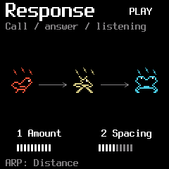
- 1Amount
How strongly events become connected into call-and-response exchanges. At zero, the families make their own independent calls.
- 2Spacing
The space between the opening call and its reply. More spacing gives the conversation more room.
Responses follow eligible families: a family with no level or Activity is not a useful conversation partner. Tame replies take the clock into account; Wild replies use free time.
Near, far, and moving.
Press ARP again to enter Distance. Now choose an inhabitant with ALGO and give its voice a place in the landscape.
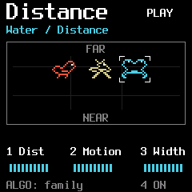
- 1Dist
Move the selected family farther away. Its sound becomes softer, darker and less immediate.
- 2Motion
Introduce movement in depth and stereo position.
- 3Width
Set the spread of that family’s spatial position.
- 4On / Off
Enable or bypass Distance for the selected family.
The settings belong to the selected family. ARP alternates Response and Distance; ALGO chooses which inhabitant you are placing.
A breeze at your fingertips.
Return Home and play a key. This is Wind: the harmonic voice moving through our island. Turn PRESET to open its page.
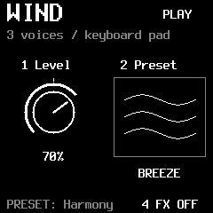
- 1Level
Set the level of the Wind you play.
- 2Preset
Choose Breeze, Mist, Glass, Zephyr, Choir, Venturi, Dune or Nocturne.
- 4FX
Choose whether Wind enters its effects path.
Wind FX ON follows Filter → Reverb / ICE → Tape. It bypasses Glitch, Damage and Delay. With FX OFF, Wind stays outside that effects path.
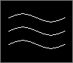
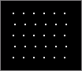
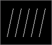
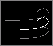
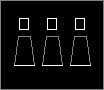
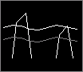
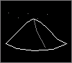
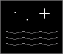
Let the wind find harmony.
Turn PRESET again. Wind’s harmony page lets a single gesture become a note within a scale, or a chord carried by the breeze.
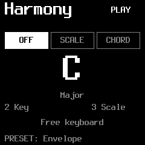
- 1Mode
OFF leaves the keyboard free. SCALE maps notes into the selected scale. CHORD builds harmony from your key presses.
- 2Key
Choose the root key.
- 3Scale
Choose the harmonic scale.
- 4Chord
In CHORD mode, choose Triad, Seventh, Sus2 or Sus4.
Wind uses up to three simultaneous synthesis voices in this build. The choice of scale, key and chord shapes those existing voices rather than adding another layer.
How the wind arrives and leaves.
Turn PRESET once more to shape Wind’s envelope. A gentle entrance and a lingering departure can change the feeling of the same note.
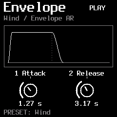
- 1Attack
How slowly the sound rises after a note is played.
- 2Release
How long it fades after you let the note go.
Attack ranges from 10 ms to 10 s; Release from 20 ms to 20 s. Turn PRESET again to return to Wind.
Harmony, slowly changing.
Press SEQ to open Drift. The notes you play become the starting point for small harmonic journeys.
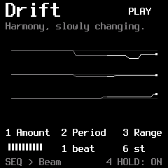
- 1Amount
The likelihood of a voice moving at a Drift opportunity.
- 2Period
How often Drift considers a change, measured against the clock.
- 3Range
How far a voice may travel from its original note, in semitones.
- 4Hold
Keep the played note or chord after you release the keys. A new chord replaces the held one; Drift continues around it.
Hold is a note latch, not an audio Freeze. Turn Hold off to release it. Pressing STOP also releases Hold.
Little phrases in the breeze.
Press SEQ again to visit Beam. It articulates Wind’s existing voices into rhythmic phrases, without adding more notes to its polyphony.
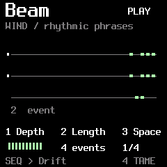
- 1Depth
The strength of amplitude articulation. At zero, Beam leaves Wind alone.
- 2Length
The number of events in the phrase before it restarts, from 1 to 16. This is not a voice count.
- 3Space
The interval between events: 1/16, 1/8, 1/4, 1/2, 1 bar or 2 bars.
- 4Tame / Wild
Tame places events on the BPM grid. Wild lets their duration and spacing vary.
SEQ alternates Drift and Beam. The display follows actual articulation events; these traces are not extra oscillators.
Objects that answer.
Press ENV. Birds, Insects and Water can now awaken resonant objects around the island: hollow wood, strings, glass or metal.
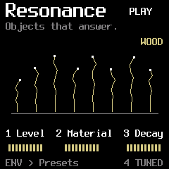
- 1Level
The level of the resonant response.
- 2Material
Change the timbre within the selected Object’s identity.
- 3Decay
How long the object rings after an excitation.
- 4Tuned / Free
Choose whether the response follows harmonic tuning or its free object character.
The yellow lines respond to excitation and damping. They settle when the object has no energy; Material also changes their movement.
Choose what the island is made of.
Press ENV again to open Presets and Balance. The object defines an identity; Material, on the first page, explores its surface and colour.
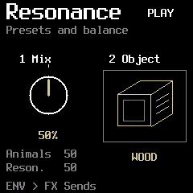
- 1Mix
Left: only the inhabitants. Centre: both inhabitants and Resonance. Right: only Resonance.
- 2Object
Choose Wood, Strings, Glass or Metal.
Wind and Ocean Tide stay outside this animals / Resonance balance. Wood is short and hollow; Strings can linger; Glass and Metal have their own ringing identities.
Who wakes the objects?
Press ENV once more. Here you choose which inhabitants can excite Resonance, and where the resonant sound is sent.
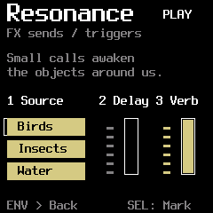
- 1Source
Move the cursor over Birds, Insects or Water. Press SEL to mark or unmark that family. Combine the sources you want.
- 2Delay
Send the resonant response to Delay.
- 3Verb
Send the resonant response to Reverb / ICE.
Source chooses the excitation, not which dry family is audible. The two sends act on the resonant result. Press ENV to return to the first page.
A flicker in the landscape.
Press FX to enter Glitch. A moment of sound can catch, repeat and become an unexpected rhythmic detail.
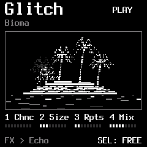
- 1Chance
How often a Glitch opportunity becomes an event.
- 2Size
The captured slice length in milliseconds.
- 3Repeats
How many times the slice repeats.
- 4Mix
Blend the effect with the incoming sound.
Sync quantizes the trigger opportunities to the quarter-note beat of the internal or selected MIDI clock. Size stays free in milliseconds. If a Glitch is still active, a new opportunity is skipped; it is not queued.
Traces, wear and echoes.
Press FX again. Damage adds worn edges, while Delay leaves a trace of the sound behind it.
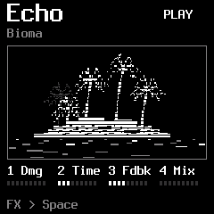
- 1Damage
Introduce degradation and subtle crackles.
- 2Time
Set the delay interval.
- 3Feedback
How much of each echo returns to the delay.
- 4Delay Mix
Set the amount of delayed sound in the mix.
A source needs a Delay send to feed the shared delay. Wind and Ocean Tide bypass this part of the chain.
Let the island linger.
Press FX again. Shape the spectrum, give the scene a room and let the tape soften its edges.
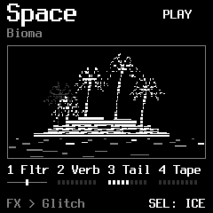
- 1Filter
Centre is open. Turn left for a low-pass response, or right for high-pass.
- 2Reverb
Set the reverb amount.
- 3Decay
Set the reverb’s lingering time.
- 4Tape
Introduce tape character and movement.
FX cycles Glitch → Echo → Space. SELECT stays within FX while this section is open. Reverb and ICE are alternative modes of the same reverb stage.
Let the island listen.
Invite another instrument into Bioma. Play Wind with MIDI notes and shape the inhabitants, Resonance, effects, Drift and Beam with CCs.
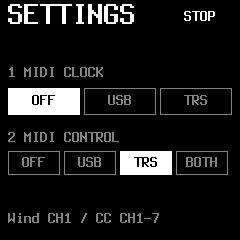
- Hold HOME, choose Settings with SELECT, then press SEL.
- Set 2 MIDI CONTROL to USB, TRS or BOTH for notes and CCs. It starts OFF.
- For external timing, separately set 1 MIDI CLOCK to USB or TRS and enable clock output on your other instrument. Leave Clock OFF to use Bioma’s internal BPM.
Channel 1 plays Wind. Channels 2–4 control Birds, Insects and Water; 5 controls Resonance; 6 controls FX; 7 controls Drift and Beam.
Bioma MIDI notes & CC reference ↗Requires build 2026110608 or later. Clock and performance control are independent.